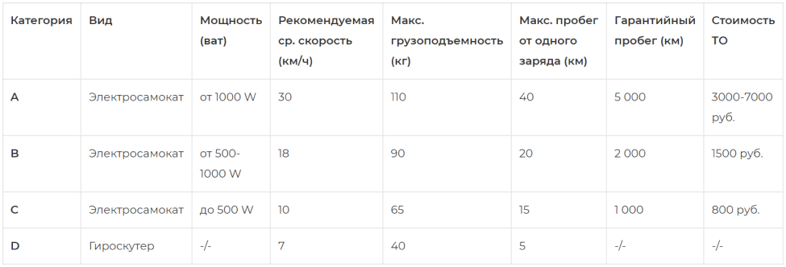

Сервис и гарантия
Гарантийные условия
Термины и определения:
Потребитель/покупатель — лицо, приобретающее или использующее товар исключительно для личных, семейных, домашних и иных нужд, не связанных с осуществлением предпринимательской деятельности;
Продавец — организация независимо от её организационно-правовой формы, а также индивидуальный предприниматель, реализующие товары потребителям по договору купли-продажи.
Сервисный центр — организация независимо от её организационно-правовой формы, а также индивидуальный предприниматель, осуществляющий гарантийное или платное обслуживание товаров. Сервисный центр не является аффилированной организацией продавца и не несёт ответственность перед потребителем за проданный товар.
Товар/Электротранспорт — вид транспорта, использующий в качестве источника энергии электричество, в качестве привода электродвигатель. В соответствии с техническими характеристиками электротранспорт является технически сложным товаром. Товар входит в Перечень непродовольственных товаров надлежащего качества, не подлежащих возврату или обмену на аналогичный товар других размера, формы, габарита, фасона, расцветки или комплектации, утверждённому постановлением Правительства российской Федерации от 19.01.1998 № 55.
Категория товара — подвид товара, имеющий отдельные критерии и характеристики относительно потребительских качеств.
Правила эксплуатации хранения транспортировки — требования обязательные к соблюдению при пользовании товаром.
Идеальные условия эксплуатации — рекомендованные продавцом и/или производителем условия эксплуатации товара при которых может быть достигнута максимальная среднестатистическая производительность электротранспорта (максимальная скорость, максимальный пробег при полном заряде аккумулятора, скорость торможения)
Гарантийный срок — срок, при котором продавец осуществляет гарантийное обслуживание эректротранспорта.
Продавец — организация независимо от её организационно-правовой формы, а также индивидуальный предприниматель, реализующие товары потребителям по договору купли-продажи.
Сервисный центр — организация независимо от её организационно-правовой формы, а также индивидуальный предприниматель, осуществляющий гарантийное или платное обслуживание товаров. Сервисный центр не является аффилированной организацией продавца и не несёт ответственность перед потребителем за проданный товар.
Товар/Электротранспорт — вид транспорта, использующий в качестве источника энергии электричество, в качестве привода электродвигатель. В соответствии с техническими характеристиками электротранспорт является технически сложным товаром. Товар входит в Перечень непродовольственных товаров надлежащего качества, не подлежащих возврату или обмену на аналогичный товар других размера, формы, габарита, фасона, расцветки или комплектации, утверждённому постановлением Правительства российской Федерации от 19.01.1998 № 55.
Категория товара — подвид товара, имеющий отдельные критерии и характеристики относительно потребительских качеств.
Правила эксплуатации хранения транспортировки — требования обязательные к соблюдению при пользовании товаром.
Идеальные условия эксплуатации — рекомендованные продавцом и/или производителем условия эксплуатации товара при которых может быть достигнута максимальная среднестатистическая производительность электротранспорта (максимальная скорость, максимальный пробег при полном заряде аккумулятора, скорость торможения)
Гарантийный срок — срок, при котором продавец осуществляет гарантийное обслуживание эректротранспорта.
Категории товара и их технические характеристики:

Данные характеристики рассчитаны без учёта субъективных дорожных условий, при учёте не превышения потребителем грузовой нагрузки электротранспорта. Продавец не отвечает за неудовлетворение субъективных ожиданий покупателя от применения приобретённоготовара. Указанные характеристики применяются к конкретной категории товара если иное прямо не указанно производителем.
Внимание! — перед началом эксплуатации устройства необходимо обязательно ознакомиться с инструкцией по эксплуатации.
Правила эксплуатации
1. Зарядка
Напряжение питания зарядного устройства электротранспорта — 220 вольт. Сетевые скачки напряжения могут повредить электронные системы его защиты, поэтому правилами эксплуатации ЗАПРЕЩАЕТСЯ заряжать устройство без применения дополнительной защиты — стабилизаторов напряжения и оставлять его без присмотра. Время зарядки батареи составляет разный период у разных моделей, так как зависит от ёмкости аккумулятора. Для более точной информации вы обязаны ознакомиться с книжкой эксплуатации, которую вы получили при покупке. Заряд аккумулятора электротранспорта рекомендуется поддерживать на уровне не ниже 40%. Нельзя допускать систематический полный разряд аккумулятора.Зарядка аккумулятора должна производится в том числе в случаях когда аккумулятор заряжен менее чем на 40%, в противном случае это может привести к преждевременному выходу из строя аккумулятора. Не оставляйте электротранспорт с разряженной батареей. Если он долго будет стоять не заряженный, то это может привести к выходу из строя батареи. Каждые две недели нужно заряжать электротранспорт хотя-бы один раз. Аккумуляторы этого типа (литий-ионные) не предназначены для низких температур. Это продлит срок службы аккумулятора. Использование электротранспортом при зарядке запрещено. В процессе использования максимальный заряд аккумулятора неизбежно сокращается.
2. Использование:
Запрещается управление самокатом без защитной экипировки. Запрещается управление электротранспортом лицами не достигших 14 лет, беременным женщинам и инвалидам. Запрещается управление электротранспортом в состоянии алкогольного, наркотического опьянения, а так же под действием препаратов замедляющих реакцию водителя. Электротранспорт не предназначен для передвижения по дорогам предназначенных для автомобилей. При езде стоя необходимо ставить ноги друг за другом. Запрещается поднимать ногу/ноги во время движения. Корпус водителя при движении и совершении манёвров должен быть параллельно рулю. Управление электротранспортом одной рукой — запрещено. Данные требования направлены на обеспечение максимальной устойчивости при движении и соответственно для обеспечения безопасной езды. Электротранспорт оснащён световыми сигналами. Передние и задние (если они имеются) могут освещать небольшие участки дороги для объезда препятствий в тёмное время суток. Максимальная и рекомендуемая скорость движения указаны для соответствующей категории электротранспорта. При использовании электротранспорта не рекомендуется превышать установленную среднюю скорость движения. Несоблюдение данных требований влечёт повышенный расход заряда аккумулятора, а так же сказывается на скорости торможения.К идеальным условиям эксплуатации относится совокупность условий, при соблюдении которых электротранспорт может проехать максимально заявленное расстояние от одного полного заряда батареи. Такими условиями являются:
Напряжение питания зарядного устройства электротранспорта — 220 вольт. Сетевые скачки напряжения могут повредить электронные системы его защиты, поэтому правилами эксплуатации ЗАПРЕЩАЕТСЯ заряжать устройство без применения дополнительной защиты — стабилизаторов напряжения и оставлять его без присмотра. Время зарядки батареи составляет разный период у разных моделей, так как зависит от ёмкости аккумулятора. Для более точной информации вы обязаны ознакомиться с книжкой эксплуатации, которую вы получили при покупке. Заряд аккумулятора электротранспорта рекомендуется поддерживать на уровне не ниже 40%. Нельзя допускать систематический полный разряд аккумулятора.Зарядка аккумулятора должна производится в том числе в случаях когда аккумулятор заряжен менее чем на 40%, в противном случае это может привести к преждевременному выходу из строя аккумулятора. Не оставляйте электротранспорт с разряженной батареей. Если он долго будет стоять не заряженный, то это может привести к выходу из строя батареи. Каждые две недели нужно заряжать электротранспорт хотя-бы один раз. Аккумуляторы этого типа (литий-ионные) не предназначены для низких температур. Это продлит срок службы аккумулятора. Использование электротранспортом при зарядке запрещено. В процессе использования максимальный заряд аккумулятора неизбежно сокращается.
2. Использование:
Запрещается управление самокатом без защитной экипировки. Запрещается управление электротранспортом лицами не достигших 14 лет, беременным женщинам и инвалидам. Запрещается управление электротранспортом в состоянии алкогольного, наркотического опьянения, а так же под действием препаратов замедляющих реакцию водителя. Электротранспорт не предназначен для передвижения по дорогам предназначенных для автомобилей. При езде стоя необходимо ставить ноги друг за другом. Запрещается поднимать ногу/ноги во время движения. Корпус водителя при движении и совершении манёвров должен быть параллельно рулю. Управление электротранспортом одной рукой — запрещено. Данные требования направлены на обеспечение максимальной устойчивости при движении и соответственно для обеспечения безопасной езды. Электротранспорт оснащён световыми сигналами. Передние и задние (если они имеются) могут освещать небольшие участки дороги для объезда препятствий в тёмное время суток. Максимальная и рекомендуемая скорость движения указаны для соответствующей категории электротранспорта. При использовании электротранспорта не рекомендуется превышать установленную среднюю скорость движения. Несоблюдение данных требований влечёт повышенный расход заряда аккумулятора, а так же сказывается на скорости торможения.К идеальным условиям эксплуатации относится совокупность условий, при соблюдении которых электротранспорт может проехать максимально заявленное расстояние от одного полного заряда батареи. Такими условиями являются:
- загруженность электротранспорта, которая складывается из веса водителя и иных вещей (к примеру вес портфеля). Превышение установленного максимального веса неизбежно влияет на уровень расхода заряда батареи и возможность развивать максимально заявленную скорость.
- резкое увеличение скорости/ постоянное движение на повышенной скорости. Несоблюдение данных требований неизбежно влияет на уровень расхода заряда батареи.
- движение при наличии факторов сопротивления (встречный ветер, угол наклона дороги, ровность дороги). Не рекомендуется использовать электротранспорт по дорогам с повышенным подъёмом, по неровным поверхностям, при встречном ветре.
- движение при условии надлежащим образом надутых и сбалансированных колёс. Использование электротранспорта при не соблюдении данного требования повышает нагрузку и сопротивление при движении.
- использование электросамовара при низких (не отрицательных) температурах прямо влияет на скорость разряда аккумулятора.Наличие при движении вышеуказанных факторов, как по отдельности, так и в их совокупности прямо пропорционально влияет на нагрузку двигательной системы и как следствие на энергопотребление, в связи с чем максимальная скорость и пробег электротранспорта может отличаться от заявленных продавцом или производителем.
ЗАПРЕЩАЕТСЯ!
- Использовать электротранспорт при низком заряде батареи (индикатор батареи будет гореть красным)
- Использовать электротранспорт при блокировке (более точную информацию проверьте в книжке/инструкции по эксплуатации)
- Использовать электротранспорт по дорогам угол подъёма которых превышает 15%.
- Использовать электротранспорт во время загорания сигнала ошибки (какие разновидности ошибок есть и что делать, ознакомьтесь в книжке/инструкции по эксплуатации)
- Использовать электротранспорт при перегреве (смотреть на индикатор)
- Использовать электротранспорт во время дождя или кататься по влажной поверхности (лужи и т.д.)
- Использовать электротранспорт в снег или кататься по льду.
- Мочить, мыть его под струёй воды. Это может привести к поломке.
- Хранить и использовать в условиях температуры 0°C и ниже.
- Ездить по неровной дороге, по камням, песку и другим дефектным поверхностям для исключения попадания посторонних предметов, веществ, грязи итд.
- Прыгать с высоты или совершать съезд с бордюров, поребриков и.т.д. выше 5 см.
Правила гарантийного обслуживания
- 1.Гарантийный срок на приобретаемый электротранспорт составляет 12 месяцев или установленный для определённой категории электротранспорта пробег, в зависимости от того что наступит ранее. Начало гарантийного срока исчисляется с момента продажи.
- 2.За 5 км до окончания гарантийного пробега, гарантийный пробег может быть увеличен при прохождении потребителем дополнительного платного технического обслуживания электротранспорта. Вместе с тем двенадцати месячный гарантийный срок в таком порядке увеличению не подлежит.
- 3.Продолжительность гарантийного срока на элемент питания (батарею) – 3 месяца;
- 4.На болты, подшипники, крепления, колёса, которые не являются мотором, другие механические части корпуса, люфт рулевого управления и складного механизма гарантия не распространяется — так как эти части электротранспорта являются расходным материалом и должны заменяться в процессе эксплуатации в соответствии с их износом.
- 5.В течение гарантийного срока/гарантийного пробега, продавец обеспечивает бесплатный ремонт товара.
- 6.К устранению недостатков не относятся произведённые работы по чистке аппарата, замене необходимых расходных материалов, фиксации и протяжка болтов и иных крепёжных элементов товара, регулировка тормозной, двигательной и рулевой системы.
- 7.Гарантия действительна при наличии настоящей, правильно заполненной, сервисной книжки, в которой указано наименование товара, серийного номера, дата продажи и печати продавца.
Порядок обращения потребителей за гарантийным обслуживанием
- 1.За гарантийным обслуживанием потребитель обязательном порядке должен предъявить письменное требование продавцу, указав контактную информацию, дату покупки, наименование товара и его серийный номер, характер и причины неисправности. Продавцы, консультанты или иные лица, принявшие от потребителя такое заявление не уполномочены принимать какие-либо решения по предъявленным требованиям. Срок рассмотрения заявления составляет 10 дней (за исключением нерабочих праздничных дней).
- 2.Потребитель имеет право обратиться в Сервисный центр для проведения диагностики на предмет причин возникновения недостатка, для предоставления акта диагностики продавцу совместно с заявлением о гарантийном обслуживании.
- 3.Сервисный центр не принимает какие-либо заявления от потребителей, сервисный центр уполномочен исключительно на проведение гарантийного обслуживания, проведение диагностики/проверки качества и ремонта.
- 4.Для определения причины возникновения неисправности продавец/сервисный центр имеет право провести диагностику товара.
- 5.Доставка товара продавцу или в сервисный центр осуществляется силами потребителя.
- 6.Приёмка товара оформляется актом приёма, в котором фиксируется причина обращения и возможные неисправности. Фактическая неисправность или её отсутствие определяется только после диагностики.
- 7.В гарантийном обслуживании потребителю будет отказано, в случае если в процессе первичного осмотра или диагностики будет установлено одно из нижеперечисленных нарушений правил эксплуатации:
- В случае несоблюдения условий эксплуатации (пользования) указанных в книжке эксплуатации и в данном гарантийном талоне.
- В случае несоблюдения условий эксплуатации (пользования) указанных в книжке эксплуатации и в данном гарантийном талоне.
- В случае применения (эксплуатации) пользователем товара не по назначению и/или в нарушение правил пользования.
- В случае повреждения, вызванного вследствие чрезмерного нагрева.
- В случае использования неоригинального адаптера для зарядки, использования адаптера в несоответствующей питающей (электрической) сети, а так же в случае когда повреждённый сетевым адаптер отремонтирован или заменённый не уполномоченной сервисной организацией.
- В случае самостоятельного вскрытия, сборки, разборки товара пользователем, следов самостоятельного ремонта, наличия сорванных (вскрытых) пломб, с удалённым, стёртым или изменённым серийным номером, вмешательства пользователя в работу электрических систем товара, а ровно в случае если аппарат, подвергался вскрытию, ремонту или модификации вне уполномоченного сервисного центра.
- В случае механических повреждений как внутренних, так и внешних, являющихся следствием неправильной эксплуатацией, транспортировкой и хранением.
- В случае наличия следов попадания жидкости, а ровно в случае использования товара под дожем, езды по влажной поверхности (лужи и так д.), следы катания по льду или снегу.
- В случае попадания в оборудования посторонних предметов, насекомых, грязи, песка и т.д.
- В случае если неисправности, вызваны перегрузкой оборудования, повлекшей вывод из строя электродвигателя или других узлов и деталей. Потемнение или обугливание изоляции проводов под воздействием высокой температуры.
- 8.Если причина возникновения неисправности признается не гарантийной то, товар возвращается покупателю вместе с заключением о причинах отказа в гарантийном ремонте.
- 9.Если случай признается гарантийным, производится бесплатный ремонт товара. Гарантийный срок продлевается на время нахождения товара в ремонте. Срок устранения недостатков товара на гарантийной основе составляет 45 дней (за исключением нерабочих праздничных дней).
- Продавец не отвечает за прямой или косвенный ущерб, причинённый Покупателю в процессе эксплуатации товара, а так же за ущерб, вызванный невозможностью использовать товар.
Информационное письмо о порядке урегулирования требований потребителя
Уважаемые клиенты, просим ознакомиться с информацией о правилах обращения к продавцу с претензиями относительно качества товара
Прежде всего, ставим вас в известность, что электротранспорт относится к технически сложному товару в соответствии с утверждённым Правительством РФ перечнем технически сложных товаров. Законодатель не позволяет обменивать и/или возвращать товар продавцу по его не соответствию расцветки, габаритам и прочим свойствам товара не относящихся к его потребительским качествам.
Убедительная просьба при покупке товара подойти к его выбору разумно и получить от продавца всю исчерпывающую информацию о товаре и его свойствах, в том числе путём пробного использования вблизи территории магазина.
В случае если в товаре проявился какой-либо недостаток, вы можете получить гарантийное обслуживание на территории сервисного центра. Информация о сервисном центре, который имеет право обслуживать ваш товар имеется в гарантийном талоне, который является неотъемлемой частью договора купли продажи. Дополнительную информацию о месте расположения сервисного центра уточняйте у продавца. Срок устранения недостатков товара на гарантийной основе составляет 45 дней (за исключением нерабочих праздничных дней).
В случае если в процессе эксплуатации товара в период гарантийного срока у вас возникли иные проблемы, которые затруднительно решить через обращение в сервисный цент, вы имеете право обратиться в магазин по месту покупки с заявлением.
У сотрудников торговой точки имеются в наличии бланки заявлений. Просим вас правильно заполнить бланк претензии, разборчивым подчерком, подробно изложив обстоятельства и суть ваших требований. При наличии затруднений в заполнении настоящего бланка претензии, потребитель может обратиться за дополнительной помощью к сотруднику магазина. Вы не лишены права составить претензию в иной удобной для вас форме.
Просим обратить внимание что Сотрудник магазина юридических консультаций не даёт, не уполномочен разрешать ваше требование по существу и не имеет специальных технических познаний для определения причин наличия недостатков в товаре и тем более для их устранения.
В соответствии со ст. 22 Закона РФ «О защите прав потребителей» срок рассмотрения претензионных требований составляет 10 дней, за исключением нерабочих праздничных дней.
Ставим вас в известность о необходимости по требованию продавца передать товар продавцу для проведения проверки качества, а так же о необходимости по требованию продавца совершить дополнительные юридически значимые действия, без которых продавец будет лишён возможности рассмотреть и/или удовлетворить требования потребителя. Злоупотребление правом недопустимо в силу ст. 10 ГК РФ. Срок проведения проверки качества составляет 10 рабочий дней с момента передачи товара продавцу. При проведении проверки качества стороны не допускаются в производственные помещения сервисного центра. Согласно политике сервисного обслуживания, установленной, в том числе производителем и сервисным центром, к устранению недостатков не относятся произведённые работы по чистке аппарата, замене необходимых расходных материалов, фиксации и протяжка болтов и иных крепёжных элементов товара, регулировка тормозной, двигательной и рулевой системы.
Прежде всего, ставим вас в известность, что электротранспорт относится к технически сложному товару в соответствии с утверждённым Правительством РФ перечнем технически сложных товаров. Законодатель не позволяет обменивать и/или возвращать товар продавцу по его не соответствию расцветки, габаритам и прочим свойствам товара не относящихся к его потребительским качествам.
Убедительная просьба при покупке товара подойти к его выбору разумно и получить от продавца всю исчерпывающую информацию о товаре и его свойствах, в том числе путём пробного использования вблизи территории магазина.
В случае если в товаре проявился какой-либо недостаток, вы можете получить гарантийное обслуживание на территории сервисного центра. Информация о сервисном центре, который имеет право обслуживать ваш товар имеется в гарантийном талоне, который является неотъемлемой частью договора купли продажи. Дополнительную информацию о месте расположения сервисного центра уточняйте у продавца. Срок устранения недостатков товара на гарантийной основе составляет 45 дней (за исключением нерабочих праздничных дней).
В случае если в процессе эксплуатации товара в период гарантийного срока у вас возникли иные проблемы, которые затруднительно решить через обращение в сервисный цент, вы имеете право обратиться в магазин по месту покупки с заявлением.
У сотрудников торговой точки имеются в наличии бланки заявлений. Просим вас правильно заполнить бланк претензии, разборчивым подчерком, подробно изложив обстоятельства и суть ваших требований. При наличии затруднений в заполнении настоящего бланка претензии, потребитель может обратиться за дополнительной помощью к сотруднику магазина. Вы не лишены права составить претензию в иной удобной для вас форме.
Просим обратить внимание что Сотрудник магазина юридических консультаций не даёт, не уполномочен разрешать ваше требование по существу и не имеет специальных технических познаний для определения причин наличия недостатков в товаре и тем более для их устранения.
В соответствии со ст. 22 Закона РФ «О защите прав потребителей» срок рассмотрения претензионных требований составляет 10 дней, за исключением нерабочих праздничных дней.
Ставим вас в известность о необходимости по требованию продавца передать товар продавцу для проведения проверки качества, а так же о необходимости по требованию продавца совершить дополнительные юридически значимые действия, без которых продавец будет лишён возможности рассмотреть и/или удовлетворить требования потребителя. Злоупотребление правом недопустимо в силу ст. 10 ГК РФ. Срок проведения проверки качества составляет 10 рабочий дней с момента передачи товара продавцу. При проведении проверки качества стороны не допускаются в производственные помещения сервисного центра. Согласно политике сервисного обслуживания, установленной, в том числе производителем и сервисным центром, к устранению недостатков не относятся произведённые работы по чистке аппарата, замене необходимых расходных материалов, фиксации и протяжка болтов и иных крепёжных элементов товара, регулировка тормозной, двигательной и рулевой системы.
В случае наличия вопросов вы можете обратиться
в наш Юридический отдел.
Адрес отдела по урегулированию претензий:
173004 г. В. Новгород ул. Тимура Фрунзе-Оловянка 17/3 оф. 5.
Тел. +7 (996) 067-00-96
эл. почта: mdsmbr@gmail.com
в наш Юридический отдел.
Адрес отдела по урегулированию претензий:
173004 г. В. Новгород ул. Тимура Фрунзе-Оловянка 17/3 оф. 5.
Тел. +7 (996) 067-00-96
эл. почта: mdsmbr@gmail.com